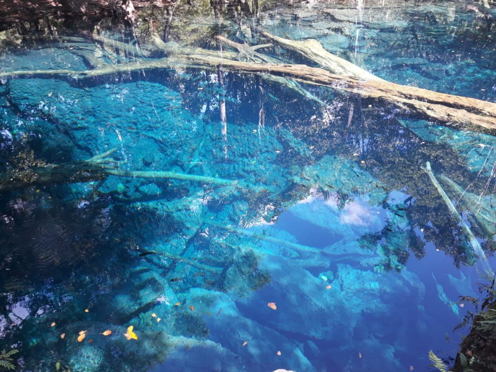

Things to do in DR
Swim in Hoyo Azul, crossing a bridge to Farallon Cliff for a flora and fauna tour;
hike through the jungle to Farallon Cliff, and explore a cave’s underground chambers; ride 12 ziplines over the
Caribbean coastline, ending with a dip in the water; travel in a safari truck to Cape San Rafael, a local waterfall,
a plantation, and a country home; head for exclusive Juanillo Beach, where you'll enjoy open bar privileges and water
sports; take a nature walk to see Taino pictograms, then swim in a cenote; play at Xenotes Caribe, a series of diving
platforms, zip lines and water hammocks that dip into the water; or sail up the coast of Cap Cana on a double-decker catamaran,
with stops at a sand bar and a snorkeling site.
Hoyo Azul & Scape Park Cap Cana
The most beautiful stretch of beach in the Punta Cana area is undoubtedly Bávaro Beach,
just north of Punta Cana. The calm Caribbean waters are perfect for swimming or wading, and the water color is a typical Caribbean
turquoise hue that stretches out well beyond the roped-off swimming area to the protective reef in the distance. Beyond the swimming
zone is an action packed area of boats and parasailers. If you want to hire a boat, you can simply walk down to the waterfront in Las
Galeras, where the main road into town dead-ends at the ocean, and someone will be waiting to help you. The boats leave directly from
the beach here.
Dominican Republic Beaches